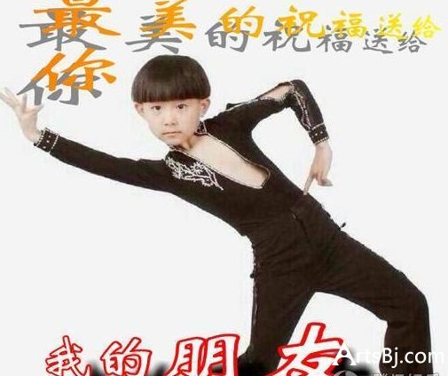

所谓老年人表情最早来自于手机短信，在能发彩信的手机刚刚普及的时候，70后刚为爹妈、80后初出茅庐、90后还是一群熊孩子，所以30来岁有钱又有空的60后成了购买手机的主力。逢年过节的拜年方式，也从翻电话本变成了翻手机通讯录。
后来由于打电话始终不太方便，于是短信便成了逢年过节的问候方式。但是短信编辑起来太麻烦，于是很多人开始转发，甚至闹出了连名字都没改的乌龙。
再后来，大家发短信也发够了。毕竟这东西费时费力费脑子，还表达不了自己的心思，翻来覆去也就那几句“阖家欢乐，幸福安康”。于是，彩信功能开始进入了大家的视野。彩信相比起短信，又省心省力，也不怕转发闹乌龙，合适！于是……中老年表情包时代开始了。
中老年表情包大多表达了长辈们对于朋友们的美好祝愿，长辈们使用这种表情包大多是表达心中真实的想法。
对于年轻人来说，使用中老年表情包，用以娱乐自己和他人的意图多于表达祝福的意图。
